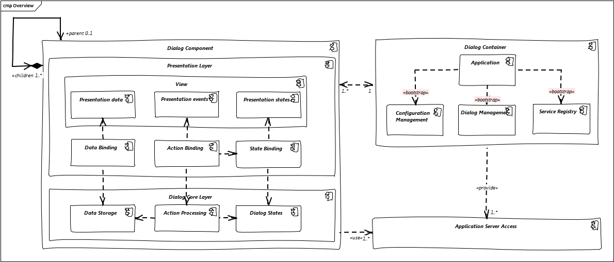
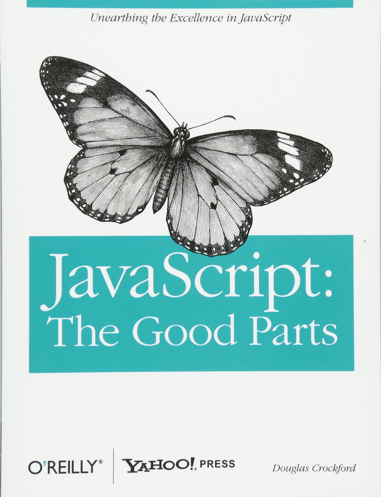

Help!
my Project has a ...
... Frontend!

A frontend developer amongst software architects...

Agenda
- Definition of a frontend and its job
- Concepts
- UI Component Tree
- Complexity
- Threads and Asynchronous Behavior
- Testing
- Frameworks and Libraries
- Web
Definition of a frontend and its job
Definition of a Frontend
- For the purpose of this talk, a Frontend is defined by having
- interaction with a user
- significant amount of logic running on a local machine
- i.e. not a terminal in the Host sense
- calls to some kind of logic (remote or local) which can be accessed through an API
- as opposed to a document centric application like Excel or Word
- no restriction on the runtime environment:
can be native, web, mobile, embedded, …
Job of a Frontend
- Display static frame: boxes, tabs, buttons, labels
- Display dynamic data
- Allow and handle user input and validation
- Allow and handle user actions
- Manage state (display and logical)
- Organize dialogs, allow communication between them
- Manage startup/shutdown, user session and settings
- Process things / communicate with backend

Concepts
Key Concepts (1/2)
- UI Component Tree
Everything is a rectangle in a hierarchy – where to draw the line?
- Complexity
Tables are hard, Trees are harder, and you‘re always fighting constraints, but how do
you divide and conquer?
- Threads and Async Behaviour
There is only one thread and it processes all events asynchronously
- Testing
Frontends tests can be automated – but do you really want to?
Key Concepts (2/2)
- Authorization
The frontend wants to know all the rights, not just one!
- Error handling
Detect » Analyze » Display (» Quit or Continue?)
- Backend API and Calls
Can we please generate this? And when may writing by hand be better?
- Caching & Preloading
Can be a nightmare with object structures...
UI Component Tree
- DOM (Document Object Model)
- Events & event flow
- Event bubbling
- Architecture overview
- Angular and component driven architecture
- Components, Services, Modules
- Smart & presentation components

DOM
Document Object Model
The HTML DOM is a standard object model and programming interface for HTML. It's a
standard for how
to get, change, add, or delete HTML elements.

Event flow
Events are responsible for interaction of JavaScript with HTML web
pages.
Basic example?
Button click
Event flow is the order in which event is
received on the web
page. If a nested element has been clicked, the click event is
triggered on each parent of the
nested element.
Event bubbling
When an event happens on an element, it first runs the handlers on
it, then on its parent, then all
the way up on other ancestors.

Components, Services, Modules
 Source
Source
Modules
- Every Angular app has a root module, conventionally named AppModule, which
provides
the bootstrap mechanism that launches the application.
An app typically contains many functional modules.
- Organizing your code into distinct functional modules helps in managing development of
complex
applications , and in designing for reusability. In addition, this
technique lets you take advantage
of lazy-loading—that is, loading modules on demand—to minimize the
amount
of code that needs to be
loaded at startup.
Components
- Every Angular application has at least one component, the root component
that
connects a component
hierarchy with the page document object model (DOM).
-
Each component defines a class
that contains application data and logic, and is associated with an HTML
template that defines a view.

Services
- For data or logic that isn't associated with a specific view,
and
that you want to share across
components, you create a service class.
- Dependency injection (DI) lets you keep your component classes lean and
efficient. They don't fetch
data from the server, validate user input, or log directly to the console; they
delegate such tasks
to services.

Why should we divide components
?
Smart & presentation components
- Smart components
- define how the app work
- are connected to services (often stateful)
- know how to load and persist data
- Presentation components
- receive data via props (bindings)
- data comes as input, changes go as output
Complexity
What do we spend significant time on?
Complexity (1/2)
- Application Size
- A lot of dialogs which interact
- Large dialogs with lots of things happening in them
- Client and Dialog architecture
- Widgets with lots of (contradicting) features or combinations: Tables, Trees
- Challenge as soon as possible, early prototyping
- Doing the same thing in different ways: “I want it just like that but …”
- Challenge as soon as possible, use Design System
Complexity (2/2)
- Layout
- "CSS" - "Gesundheit!"
- Large amounts of data, e.g. tables but also rich text/html
- Lazy loading, caching, viewports
- Debugging
- Performance, layout and focus problems
- Frontend or Backend
- Where is the best place for logic?
Application Size: Client Architecture
- Split the client into dialog components
- Visible Rectangles as a guideline
- If not: most likely problematic
- UI Component Tree » Dialog Component Tree
- Caution: Consider layout constraints, e.g. If a dialog has a min/max view, or it can be
moved
around
Client Architecture
- Communication rules apply
- Parent knows Child
- Child can define requirements for parent
- Global Services may be dangerous
- Lifecycle has to be synchronized between parent and child
- Separate hierarchy of dialog components or re-use the UI-Components?
Client Architecture
- Dialog component API (covering display, data, user actions, …)
- What has to be supplied from the parent:
Data, User context, external events (e.g. external user actions), ...
- What has to be supplied from the child:
UI Component, menu options, status information, ...
- What can be accessed implicitly (global service)?
- What has to be handled by the parent:
data changes, other actions
- Concept: Smart- and Dumb-Components
- Dumb-Component: Self contained, gets everything from parent
- Smart-Component: Calls around (e.g. local and remote services)
Application Size: Dialog Architecture
- Use focused components to reduce complexity within a dialog
- Visual:
- Build and use UI Components like Tables, Trees, Magic-Drop-Downs, …
- Consider using visual designers if available
- Non-visual (...)
Dialog Architecture
- Non-Visual:
- Data handing:
- simple references » complex models
- State management:
- Declare dependencies instead of programming them
- Use a state engine if necessary
- Actions: extract the logic (command pattern) operating on data model and state
Widgets with lots of
(contradicting) features
- Use showcases of the UI toolkit library during specification
- Caution:
- Combinations may not make sense
- E.g. local filtering and sorting of lazy loaded table data will not work
- Features may not work (as intended) in combination
- UI libraries have bugs. Lots of them. Some even known for ages.
- Have an expert of the UI library at hand, and even then: prototype early
- Prototype and challenge early (this is getting more and more difficult)
Same but Different (1/2)
- “Here I want the normal drop down, but some entries should be displayed grey
and nothing should happen when the user selects them…”
- First option for the developer
- Ignore the already existing project specific UI component for drop down and build this specific
logic from scratch
- Special logic, new bugs, not transferable
“but there you already did that – why does it cost
so much to do it here as well?”
Same but Different (2/2)
- Second option for the developer
- Extend the project specific UI component and make this feature configurable
- UI Components get more complicated
- Use a stringent and coherent style guide (preferably based on a design system)
- Develop project specific UI components if the UI toolkit does not allow this directly
- Make sure the client knows this and make the extra cost for exceptions as transparent as
possible
Layout
- Layout Managers/Mechanisms dynamically organize visual elements based on constraints
- Solve the question “what position and what rectangular size should the element have”
- Typically two calculation methods:
- As much space available as I desire (because of Scrollbars)
- Things need to fit into a box with a given size
- Complexity comes from the number of options and the intuitive knowledge about what the
algorithm does
- Give guidelines on the allowed Layout Managers or mechanisms
- Start during the specification phase
- Let developers get familiar with the options
Debugging (1/2)
- In a few situations, debugging is really difficult
- Layout
- Layout algorithms are influenced by a lot of parameters and circumstances
(and a debugger
doesn’t help, intuitive knowledge is helpful)
- Focus
- A debugger which is used grabs the focus from the application which is debugged
Debugging (2/2)
- Performance of asynchronous events
- Profiling does not necessary help when (multiple) events are triggered for unknown reasons
- UI Toolkits
- You may have to debug through the complex UI toolkit code to understand some (undocumented)
behaviour
- Rely on Experience (or really smart developers)
Frontend or Backend
- Where is the best place for logic?
- TODO BOL
Threads and Async behaviour
- Aspects
- UI Toolkit Libraries are single threaded » background activity » UI blocking
- Asynchronous thinking is difficult - just like multi-threaded thinking
- Modal dialogs have two dimensions
(Almost all) UI Toolkit Libraries are single threaded!
- Event Dispatch Thread, Main Thread, Display Thread, Dispatcher Thread, …
- Why?
- Performance
Thread sync is expensive and doing that every time the user moves the mouse makes
the UI hard to use.
- Consistency
The user does things in a certain order. Multithreading would have to ensure that
order is preserved and thus would not help much.
- And never try to access the UI (read or write) from a background thread, unless you know
exactly what you are doing!
Event Queues
- The core of every UI library is an event queue.
- The UI Thread processes the events in that queue sequentially.
- Types of events
- all user input events: mouse, keyboard, touch, …
- system events: window switch, screen change, …
- programmatic events: callbacks from other threads, timers, …
- layout and paint requests (this is typically done asynchronously!)
Event Processing
- Do not block the event loop: Event processing (handlers) should be very fast
- Consequences of taking too much time:
- User perceives the UI as slow or blocked (frozen, not responding)
- OS/Browser will mark the program/page as frozen and even suggest killing it
- Things which are definitely too slow:
- Backend/Network calls
- Significant disk IO
- Drawing a complex image
Handling Processing Time (1/2)
- If event processing cannot be fast, then
(after other optimization options have been considered)
- Split up the work into smaller parts and have multiple events
- This works well for things which have to interact with the UI, e.g. painting complex things
incrementally.
- Caution: You have to take care of consistency in case other events are mixed into your
events
Handling Processing Time (2/2)
- Do things in a background thread and block the UI if it is not read only
- This is the typical thing to do with backend calls
- Caution:
- Make sure the data transfer from UI thread to background thread and back is thread
safe
- If you don’t block the UI for user input, things get inconsistent very fast…
Blocking the UI (1/2)
- We want to block the UI for user input while we’re doing something in the background
- Default idea:
Put something transparent over the UI that blocks all user input (mouse, keyboard
focus): “Glass Pane”, “Loading Indicator”, …
- Caution:
- You cannot simply block/pause the UI thread, because it also handles the display!
- This can introduce flickering in the display if you have some background activity which is
relatively fast
- Possible solution: block UI transparent immediately, then use timer to display something
Blocking the UI (2/2)
- Option:
If the background logic only affects part of the UI, then only that part needs to be
blocked.
- E.g. only lazy loaded details: block this part or make sure it is read only
- Caution:
- Always give the user feedback, otherwise it will be very frustrating:
- Timer mouse cursor, loading indicator, spinner, "loading..."
- This option has to be part of the application design/specification
Blocking cannot be controlled by the framework/library
- This is logic you want to have in the framework and not let developers deal with it!
- But:
- Frameworks don’t know if something we do takes time or not!
- Frameworks don’t know if something we do needs blocking at all!
- UI Toolkit Libraries don’t even care about stuff like backend calls:
If we’re lucky, they supply
a usable technical solution for blocking the UI
- You have to make sure that the frontend project setup covers this!
- Typically: Select or write a backend access library which automatically blocks the UI while
counting the active requests.
Asynchronous Thinking
- As difficult as parallel programming?
- Basic Problem:
- We register for lots of events in lots of places
- Mouse, Keyboard, Input changes, ...
- We get callbacks from long running operations
- There's no guaranteed order or timing
- Almost anything can happen almost any time
Cause and Effect
- Types of Events
- Data changed (input in text field, ...)
- Selection changed (drop down, radio button, ...)
- Button clicked (Search, Save, ...)
- Callback (backend returns data, ...)
- ...
- Types of Responses
- Change data (clear input field, ...)
- Change state (enable something, switch displays, ...)
- Call something (backend API, printer logic, ...)
- ...
Recipes (1/3)
- Reduce possibilities
- Disable things in the UI
- In your event handlers, discard irrelevant situations immediately
- Binding (library support)
- Good for 1:1 dependencies
- Data, State, Actions
- Depending on Library:
Conversions or logic may be pluggable
Recipes (2/3)
- Handler and Code
- Can be used in n:m situations
- Pattern: "do the right thing" method
- Can be called many times
- Requests its input information from "public" sources
- Uses that to determine what the correct result is
- Be robust, the input may look inconsistent here
- Register it as callback to all events which are fired when one of the inputs changes
- Rule: Only have one place where a specific feature of the UI is changed!
Recipes (3/3)
- ReactiveX: Observables on Steroids
- Idea: chain (potentially asynchronous) functional steps logically
- Sort of looks like Java Streams, but
- Streams pull, Observables push
- Reusable
- Lots of features related to asynchronous behaviour
- ...
- Avoid the callback hell
- But difficult to master
RxJs Example
Pitfalls
- Learning Curve
- Memory Leaks
- Unregister when using a source with a different lifecycle
- Get values from the correct source
- No guaranteed order for listeners on the same event source
- Derived logic's state may not be updated
Modal Dialogs (1/2)
- Originally, modal dialogs combine two types of blocking behaviour:
- User Flow:
The user has to process this dialog
- May be scoped: Operating System, All Program Windows, One Window, One Browser Tab
- Code Flow:
The openModalDialog() returns when the user made a selection
- Does not block the event queue for painting and selective input! (Magic!)
Modal Dialogs (2/2)
- Blocking behaviour
- Native: typically both types of block
- Web: no code block - except when using the
alert('do not use this')
- Data behaviour when editing parts of object webs
- Copy: Give the dialog a copy of the data objects
- Integrate copy on Ok
- Undo: Let the dialog change the original
- Us a local "backup" for cancel
- Reload is typically bad idea (performance)
Testing
- Unit Tests (services, components) - synchronous and asynchronous
- Jasmine
- Karma
- JEST
- E2E Tests
- Protractor

Synchronous and asynchronous
Tests
How to
test
a code which relies on
asynchronous actions and operations
?
- Does the code...
- ...make asynchronous calls?
- ...use XHR, Promises, Observables?
- ...use external templates and styles?
How to...
test
...async code?
Use utilities that make the test wait until all asynchronous
operations are completed.
- In Angular...
- async & whenStable
- fakeAsync & tick
- jasmine done function
Karma
Protractor

Frameworks and Libraries
Frameworks and Libraries
- An attempt at definition:
- Framework:
Controls lifecycle, offers specific callbacks or overrides, typically can not be combined with other frameworks
- Library:
Called by us, limited control over an aspect, typically can be combined with other libraries
Dimensions for looking at Frameworks/Libraries (1/3)
- Which parts of the frontend jobs does the framework address?
- Only presentation = UI-Toolkit: JSF, Swing, WinForms, …
- Dialog organization (separated from the UI-Toolkit): CUF, …?
- Almost Everything: Angular, ExtJS, GWT, Android SDK
- Only a specific task, e.g. data model or state management?
- Opinionated vs. liberal?
- What are the degrees of liberty? Do they match the requirements?
- Plays well with others?
- Does it come with an ecosystem? (e.g. like Angular)
Dimensions (2/3)
- How does the interaction with the framework/library work?
- Does it start and we plug into it at specific places?
- Then it is probably incompatible with others like it…
- Do we mostly configure it?
- Do we call it when it has to do something?
- Does it provide debugging support?
- Does it define a lifecycle?
- Chances are it will be incompatible with others that also define a lifecyle…
Dimensions (3/3)
- What can be perceived of the quality and support?
- Is the documentation good beyond the “hello world”?
- Does it have a presence on Stack Overflow?
- What is the bug status?
- How old / stable / up-to-date is it?
- Is it platform specific?
- If not – is it equally good on all platforms?
What is a JS Framework?

Angular
- introduced by Google
- open source
- released in September 2016
- v3 was skipped to avoid semantic version issues
- component based architecture

Angular
pros & cons
- Focus on components
- High performance
- Application Component Tree
- Ivy renderer
- JIT & AOT
- TypeScript
- Angular CLI
- Steep learning curve
- Complex Angular Forms may be difficult
- RxJS may be difficult

React
- introduced by Facebook
- open source
- released in May 2013
- V layer in the MVW models

React
pros & cons
- Focus on components
- JSX
- Virtual DOM
- High performance
- Light-weighted
- Redux & flux architecture
- Limitation of documentation
- Trying to hook React with other libraries may be problematic
- Being too flexible in structure can be problematic

Vue.js
- introduced by Evan You
- open source
- released in February 2014

Vue.js
pros & cons
- Small size
- Virtual DOM
- Flexibility
- Simplicity in syntax & project setup
- Fast rendering
- Language barrier
- Closed and small community development
The Web
What is ES5?
- ES5 was created to standardize JavaScript
- ES5 is a shortcut for ECMAScript 5
- ES5 was released in 2009
EcmaScript Standards
- ES5 (2009)
- ES6 (2015)
- ES7 (2016)
- ES8 (2017)
- ES9 (2018)
Why is ES5 still relevant?
- There are lots of legacy projects, build scripts, etc. written in
ES5
- Older Browsers (IE,...) support ES5 via polyfills (shims)
TypeScript
- is a typed superset of JavaScript that compiles to plain
JavaScript
- was invented by Microsoft
Babel
a JavaScript compiler
It is a toolchain that is mainly used to convert ECMAScript 2015+
code into a backwards compatible
version of JavaScript in current and older browsers or environments.
// Babel Input: ES2015 arrow function
[1, 2, 3].map((n) => n + 1);
// Babel Output: ES5 equivalent
[1, 2, 3].map(function(n) {
return n + 1;
});
Can I Use?
The site provides up-to-date browser support
tables for the web technologies and features.
For example: css-grid, Array.prototype.find, ...

Chrome dev tools

Literature recommendation

Your experience
?